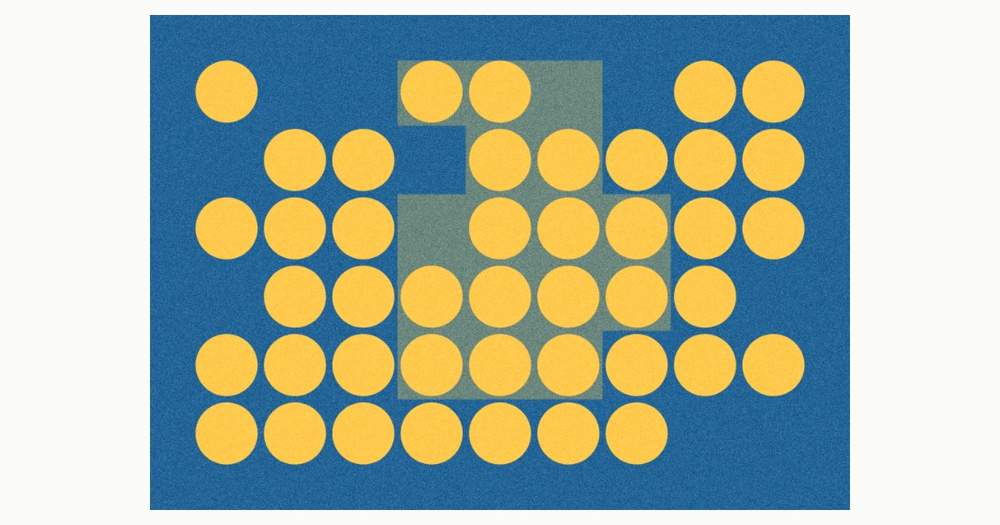

One lattice read twice. A boolean mask decides which cells hold a circle; a region grown cell by cell decides which of them share a ground. The block does not decorate — it reframes: the same circle means one thing on the field and another inside the region.
Una malla leída dos veces. Una máscara booleana decide qué celdas tienen círculo; una región crecida celda a celda decide cuáles comparten un suelo. El bloque no decora — reencuadra: el mismo círculo significa una cosa en el campo y otra dentro de la región.
Sare bat, bitan irakurria. Maskara boolear batek erabakitzen du zein gelaxkak duten zirkulua; gelaxkaz gelaxka hazitako eskualde batek erabakitzen du horietako zeinek partekatzen duten lurra. Blokeak ez du apaintzen — birmarkatu egiten du: zirkulu berak gauza bat esan nahi du eremuan eta beste bat eskualdearen barruan.
A seed cell, then spread to its neighbours. There is no catalogue of shapes. Bars, ells and staircases are consequences of the rule, not a drawing.